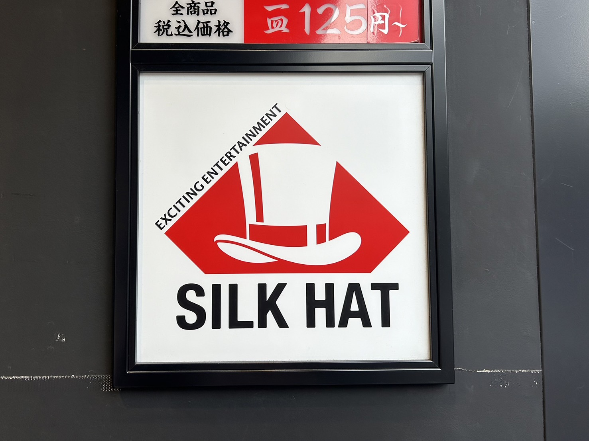
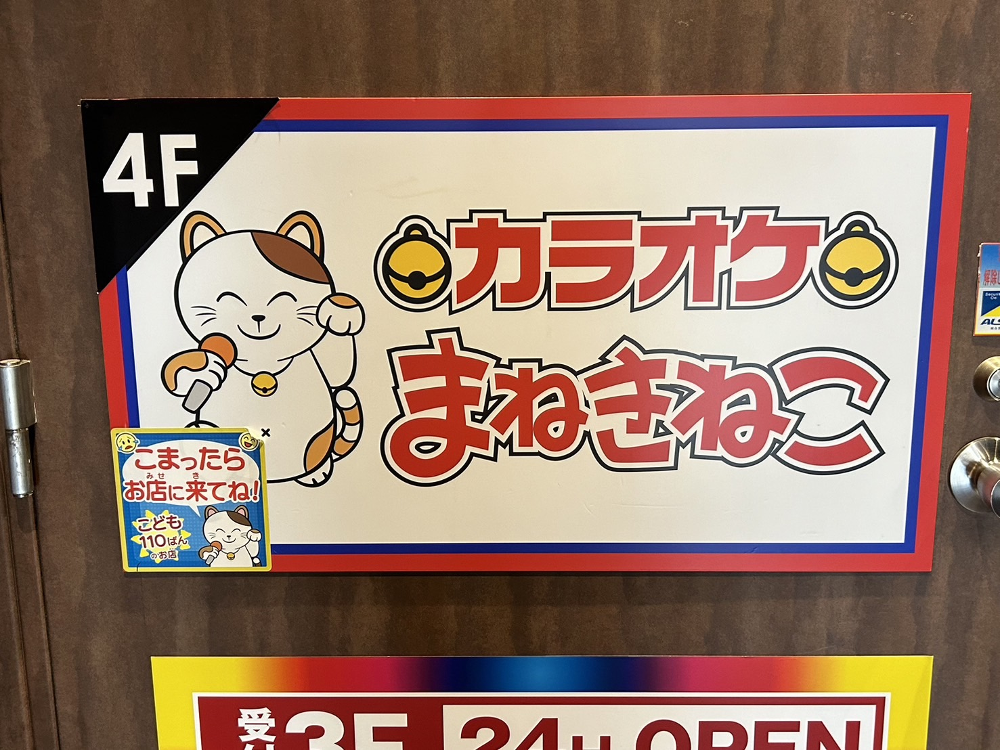
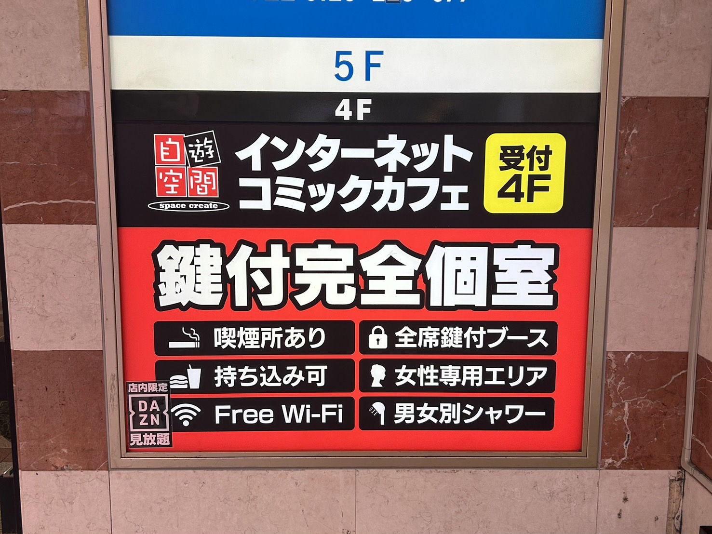

シルクハット 津田沼

場所: 千葉県習志野市１丁目２－１ 十三ビル地下１階 5F
ホームページ: 公式サイトはこちら
おすすめポイント:音楽ゲームを中心に多彩なアーケードゲームを提供するゲームセンターで、音ゲー好きに特におすすめの施設。
カラオケ本舗まねきねこ 津田沼北口店

場所: 千葉県習志野市津田沼1丁目11-4
ホームページ: 公式サイトはこちら
おすすめのポイント: 最新設備と豊富なカラオケ曲を提供し、リーズナブルな価格でグループ向けの個室やパーティルームも完備。
自遊空間 津田沼北口店

場所: 千葉県習志野市津田沼1丁目2-1
ホームページ: 公式サイトはこちら
おすすめポイント: 24時間営業の漫画喫茶で、そのほかにもインターネットやゲーム、仮眠など様々な過ごし方ができる複合施設。